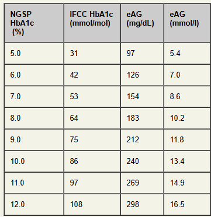
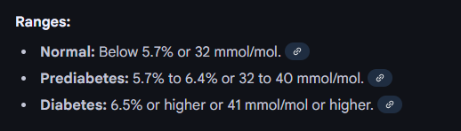
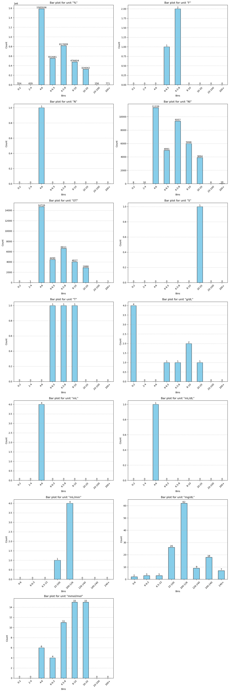
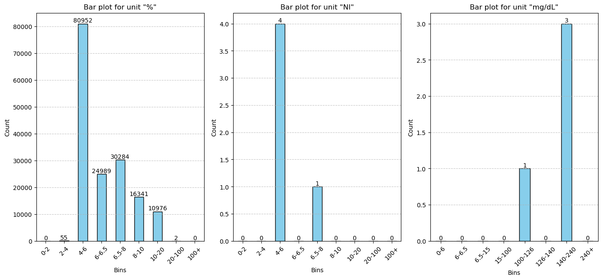
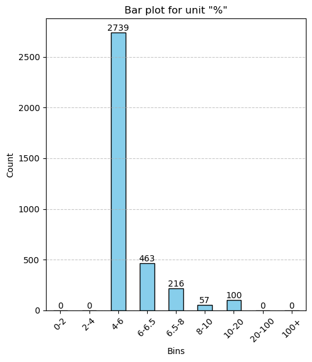
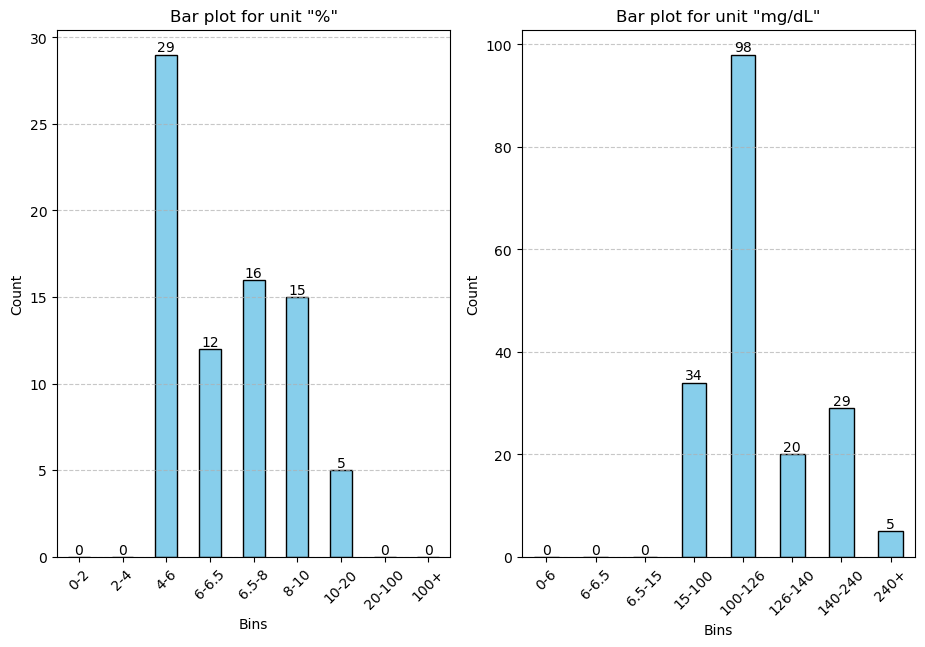

Code
import requests
import re
import pyreadr
import requests
import re
import pyreadrimport polars as pl
import numpy as np
import time
import pickle
import matplotlib.pyplot as plt
import pandas as pd
import seaborn as sns
from IPython.display import display, Markdown
from IPython.display import display, HTMLfrom scipy import stats# test_df = pl.read_database("""
# SELECT o.PATIENT_NUM, o.CONCEPT_CD, o.NVAL_NUM,o.UNITS_CD
# FROM AAOCHIN2023.S348.OBSERVATION_FACT o
# WHERE
# o.PATIENT_NUM IN (
# SELECT DISTINCT PATIENT_NUM
# FROM S348.dbo.DETERMINE_CRITERIA_IDX_DATE_AND_AGE
# )
# AND (o.CONCEPT_CD IN ('LOINC:4548-4', 'LOINC:17856-6', 'LOINC:4549-2', 'LOINC:62388-4', 'LOINC:41995-2')) --no count for 62388-4
# """,
# connection=raw_cursor,
# ) test_df = pl.read_csv("Loinc_data_a1c_cohort.parquet")loinc_df_dict = {
'LOINC:4548-4': 'Hemoglobin A1c/Hemoglobin.total in Blood',
'LOINC:17856-6': 'Hemoglobin A1c/Hemoglobin.total in Blood by HPLC',
'LOINC:4549-2': 'Hemoglobin A1c/Hemoglobin.total in Blood by Electrophoresis',
'LOINC:41995-2': 'Hemoglobin A1c [Mass/volume] in Blood'
}def analyze_values_units(df):
df=df.filter(~pl.col('NVAL_NUM').is_null()) # Excluding null values
loinc_code = df['CONCEPT_CD'][0]
# display(HTML(f"The loinc code is {loinc_code}"))
display(HTML(f"<div style='font-size:12px; font-weight:bold;'>Definition of loinc {loinc_code} is {loinc_df_dict[loinc_code]}"))
print("Unique units in the loinc code: ",np.unique(df['UNITS_CD'].to_numpy()))
uni_units,units_count = np.unique(df['UNITS_CD'].to_list(), return_counts =True)
print('\n')
print(pd.DataFrame({"uni_units":uni_units,"units_count":units_count}).to_string(index=False))
print("\n")
fig, axes = plt.subplots(num_units, 1, figsize=(10, 6 * num_units))
for unit in uni_units:
numbers = df.filter(pl.col('UNITS_CD') == unit).with_columns(
pl.col('NVAL_NUM').cast(pl.Float64)
)['NVAL_NUM'].to_numpy()
# Formatting with HTML for larger and bold text
display(HTML(f"<div style='font-size:20px; font-weight:bold;'>Statistics for measurement unit: '{unit}'</div>"))
# display(HTML(f"<h3>Statistics for measurement unit: <strong>{unit}</strong></h3>"))
display(HTML(f"<strong>Total Count:</strong> {len(numbers)}"))
minimum = min(numbers)
display(HTML(f"<strong>Minimum:</strong> {minimum}"))
maximum = max(numbers)
display(HTML(f"<strong>Maximum:</strong> {maximum}"))
mean = sum(numbers) / len(numbers)
display(HTML(f"<strong>Mean:</strong> {mean}"))
standard_deviation = np.std(numbers)
display(HTML(f"<strong>Standard Deviation:</strong> {standard_deviation}"))
display(HTML("<br>"))
print("")
# Define bin edges, adding an extra bin for values greater than 10
if unit == 'mg/dL' or unit =='mL/min':
bins = [0,6, 6.5, 15, 100, 126, 140, 240, float('inf')]
bin_labels = [
"0-6", "6-6.5", "6.5-15", "15-100", "100-126","126-140",'140-240' ,"240+"
]
else:
bins = [0, 2, 4, 6, 6.5, 8, 10, 20,100, float('inf')]
bin_labels = [
"0-2", "2-4", "4-6", "6-6.5", "6.5-8", "8-10", "10-20","20-100", "100+"
]
# Use pandas.cut to bin the data
binned_data = pd.cut(numbers, bins=bins, labels=bin_labels, right=False)
# Count the number of occurrences in each bin
bin_counts = binned_data.value_counts().sort_index()
# Plot the bar chart
plt.figure(figsize=(10, 6))
ax = bin_counts.plot(kind='bar', color='skyblue', edgecolor='black')
plt.title(f'Bar plot for loinc {loinc_code} and unit "{unit}" ')
plt.xlabel('Bins')
plt.ylabel('Count')
plt.xticks(rotation=45)
plt.grid(axis='y', linestyle='--', alpha=0.7)
for p in ax.patches:
ax.annotate(str(p.get_height()), (p.get_x() + p.get_width() / 2, p.get_height()),
ha='center', va='bottom')
plt.show()
# Creating plot
# plt.boxplot(numbers)
# plt.title(f'Box plot for loinc {loinc_code} and unit {unit} ')
# plt.xlabel('')
# plt.ylabel('Count')
# # show plot
# plt.show()
print("\n\n")def analyze_values_units_v2(df):
df=df.filter(~pl.col('NVAL_NUM').is_null()) # Excluding null values
loinc_code = df['CONCEPT_CD'][0]
# display(HTML(f"The loinc code is {loinc_code}"))
display(HTML(f"<div style='font-size:12px; font-weight:bold;'>Definition of loinc {loinc_code} is {loinc_df_dict[loinc_code]}"))
print("Unique units in the loinc code: ",np.unique(df['UNITS_CD'].to_numpy()))
uni_units,units_count = np.unique(df['UNITS_CD'].to_list(), return_counts =True)
print('\n')
print(pd.DataFrame({"uni_units":uni_units,"units_count":units_count}).to_string(index=False))
print("\n")
num_units = len(uni_units)
num_columns_plot = 3
num_rows = (num_units + 1) // num_columns_plot +1
fig, axes = plt.subplots(num_rows, num_columns_plot, figsize=(14, 6 * num_rows))
for i,unit in enumerate(uni_units):
numbers = df.filter(pl.col('UNITS_CD') == unit).with_columns(
pl.col('NVAL_NUM').cast(pl.Float64)
)['NVAL_NUM'].to_numpy()
# Formatting with HTML for larger and bold text
display(HTML(f"<div style='font-size:20px; font-weight:bold;'>Statistics for measurement unit: '{unit}'</div>"))
# display(HTML(f"<h3>Statistics for measurement unit: <strong>{unit}</strong></h3>"))
display(HTML(f"<strong>Total Count:</strong> {len(numbers)}"))
minimum = min(numbers)
display(HTML(f"<strong>Minimum:</strong> {minimum}"))
maximum = max(numbers)
display(HTML(f"<strong>Maximum:</strong> {maximum}"))
mean = sum(numbers) / len(numbers)
display(HTML(f"<strong>Mean:</strong> {mean}"))
standard_deviation = np.std(numbers)
display(HTML(f"<strong>Standard Deviation:</strong> {standard_deviation}"))
display(HTML("<br>"))
print("")
# Define bin edges, adding an extra bin for values greater than 10
if unit == 'mg/dL' or unit =='mL/min':
bins = [0,6, 6.5, 15, 100, 126, 140, 240, float('inf')]
bin_labels = [
"0-6", "6-6.5", "6.5-15", "15-100", "100-126","126-140",'140-240' ,"240+"
]
else:
bins = [0, 2, 4, 6, 6.5, 8, 10, 20,100, float('inf')]
bin_labels = [
"0-2", "2-4", "4-6", "6-6.5", "6.5-8", "8-10", "10-20","20-100", "100+"
]
# Use pandas.cut to bin the data
binned_data = pd.cut(numbers, bins=bins, labels=bin_labels, right=False)
# Count the number of occurrences in each bin
bin_counts = binned_data.value_counts().sort_index()
# Plot the bar chart
# Plot the bar chart
# Determine subplot position
row, col = divmod(i, num_columns_plot)
ax = axes[row, col] if num_rows > 1 else axes[col]
# Plot the bar chart
bin_counts.plot(kind='bar', color='skyblue', edgecolor='black', ax=ax)
ax.set_title(f'Bar plot for unit "{unit}"')
ax.set_xlabel('Bins')
ax.set_ylabel('Count')
ax.set_xticklabels(bin_labels, rotation=45)
ax.grid(axis='y', linestyle='--', alpha=0.7)
for p in ax.patches:
ax.annotate(str(p.get_height()), (p.get_x() + p.get_width() / 2, p.get_height()),
ha='center', va='bottom')
plt.subplots_adjust(hspace=1.0)
# Remove any unused subplots
for j in range(i + 1, num_rows * num_columns_plot):
fig.delaxes(axes.flatten()[j])
plt.tight_layout()
plt.show()


analyze_values_units_v2(test_df.filter(pl.col('CONCEPT_CD')=='LOINC:4548-4'))Unique units in the loinc code: ['%' 'F' 'N' 'NI' 'OT' 'S' 'T' 'g/dL' 'mL' 'mL/dL' 'mL/min' 'mg/dL'
'mmol/mol']
uni_units units_count
% 3758888
F 3
N 1
NI 35624
OT 32746
S 1
T 3
g/dL 9
mL 4
mL/dL 1
mL/min 5
mg/dL 130
mmol/mol 51
0 0
5
0 1
5
0 2
5
1 0
5
1 1
5
1 2
5
2 0
5
2 1
5
2 2
5
3 0
5
3 1
5
3 2
5
4 0
5
analyze_values_units_v2(test_df.filter(pl.col('CONCEPT_CD')=='LOINC:17856-6'))Unique units in the loinc code: ['%' 'NI' 'mg/dL']
uni_units units_count
% 163599
NI 5
mg/dL 4
0 0
2
0 1
2
0 2
2
analyze_values_units_v2(test_df.filter(pl.col('CONCEPT_CD')=='LOINC:4549-2'))Unique units in the loinc code: ['%']
uni_units units_count
% 3575
0 0
1
analyze_values_units_v2(test_df.filter(pl.col('CONCEPT_CD')=='LOINC:41995-2'))Unique units in the loinc code: ['%' 'mg/dL']
uni_units units_count
% 77
mg/dL 186
0 0
2
0 1
2